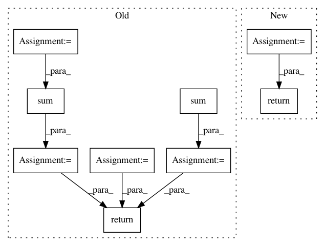

cb556a585da0b65d28d2fc7d52c3851ac1a7d369,open_seq2seq/utils/utils.py,,get_results_for_epoch,#Any#Any#Any#Any#Any#,202
Before Change
return None
if compute_loss:
total_loss = np.sum(total_loss_all)
total_samples = np.sum(total_samples_all)
// moving GPU dimension into the batch dimension
results_per_batch = [item for sl in results_per_batch_all for item in sl]
if compute_loss:
total_loss /= total_samples
return results_per_batch, total_loss
return results_per_batch
After Change
)
if compute_loss:
total_samples = collect_if_horovod(total_samples, model.hvd, "sum")
total_loss = collect_if_horovod(total_loss, model.hvd, "sum")
results_per_batch = collect_if_horovod(results_per_batch, model.hvd, "gather")
if results_per_batch is None:
// returning dummy tuple of correct shape if not in master worker
if compute_loss:
return None, None
else:
return None
if compute_loss:
return results_per_batch, total_loss / total_samples
else:
return results_per_batch
In pattern: SUPERPATTERN
Frequency: 4
Non-data size: 9
Instances
Project Name: NVIDIA/OpenSeq2Seq
Commit Name: cb556a585da0b65d28d2fc7d52c3851ac1a7d369
Time: 2018-05-30
Author: igor.a.gitman@gmail.com
File Name: open_seq2seq/utils/utils.py
Class Name:
Method Name: get_results_for_epoch
Project Name: nltk/nltk
Commit Name: 031a862a68853167c1be5aa971563f6069fd6d4d
Time: 2017-04-13
Author: goodman.m.w@gmail.com
File Name: nltk/translate/gleu_score.py
Class Name:
Method Name: sentence_gleu
Project Name: pymc-devs/pymc3
Commit Name: 62859ba05a9dff7677b6946077544bb9a224c8cc
Time: 2017-06-28
Author: maxim.v.kochurov@gmail.com
File Name: pymc3/variational/opvi.py
Class Name: Approximation
Method Name: logp
Project Name: tristandeleu/pytorch-maml-rl
Commit Name: db9d883aecb6cdfba6c6bbc76b83d85397fef28d
Time: 2018-10-23
Author: tristan.deleu@gmail.com
File Name: maml_rl/utils/torch_utils.py
Class Name:
Method Name: weighted_mean